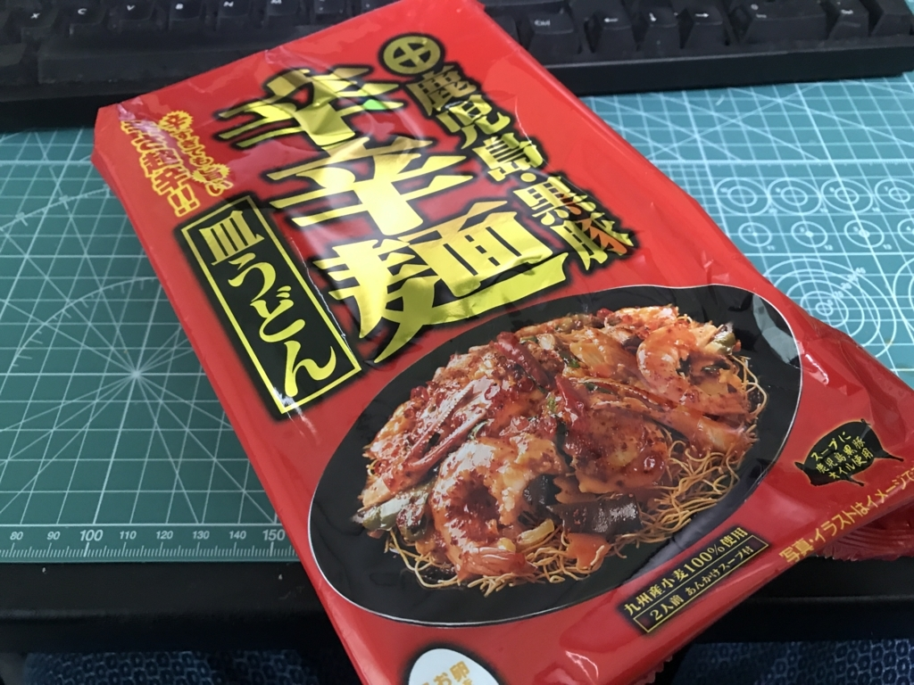

ヒガシフーズ“辛辛麺皿うどん”をもらったので食べてみた。
公開日：

東京で友達にもらったんだけど、なぜお前らは辛い物しかくれないのか。まぁ、くれたもんは食うんだけど、食べるたびにおなかを痛めている俺の身にもなってくれ。

- 出版社/メーカー: ヒガシマル
- メディア: その他
- この商品を含むブログを見る
適当に作ってみたんだけど、家にキャベツと玉ねぎ、あと安い豚肉しかなかったので、ちょっとショボくなってしまった。ピーマンでもあれば、彩的に多少マシになったのに。あと、触感的にキクラゲも必須かなぁ。
さっそく食べてみたけど、数々の辛辛と対峙してきた俺さまにとっては、少し物足りないからさだった。翌日、きっちりおなかが痛くなったので、たぶん辛いのは辛いのだけど、汁物ではない点、投入したキャベツや玉ねぎが甘みを出していた点で緩和されたのかもしれない。
皿うどんのパリパリ感と、とろみのあるアンの組み合わせが美味しゅうございました。